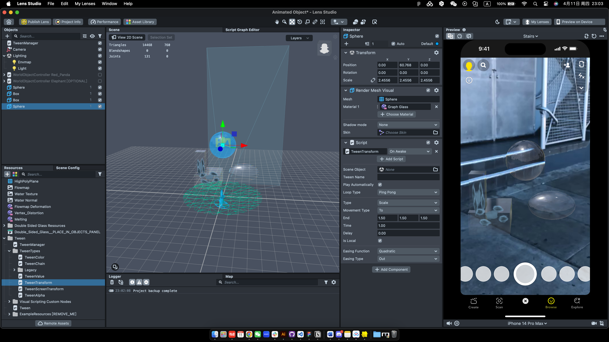

Project 4: Interaction Experiments in AR Development
1. Idea Initiation
In this project, I tried to explore and implement AR works in public space. Previously, I have made AR filters and facial AR works with SparkAR. The design and development of interactive visual effects on facial and movements usually orients the perspective on human beings. Therefore, I am interested in how AR works can be used in public space and areas, offering a connection and a medium form to bridge the gap between human and the environment.
2. Lens Studio
Since my previous experience was based on SparkAR several years ago, which at that time did not contain much options on interactivities but only some premised interactions and templates, I started with learning and exploring Lens Studio first.
After getting a basic knowledge of the software's layout, I tried to add interactions with TweenTransformation, with which a bunch of motion interactivities can be added to the object.
I also added the manipulation module to the object so that functions like drag and scale can be triggered.
2. SparkAR
But when I was trying to add a tap trigger in my Lens Studio project, the solution became quite complicated. According to my research, there were two version of code for different software versions. And my software did not support for either of them. As a tryout, I searched for solutions for SparkAR.
The interaction in SparkAR is easy now, since a lot of templates and pre-built module of nodes can be implemented directly. The tap function can be quickly attached to each of the objects.
Based on that, I played around with the mateirals and objects and finally generated an interactive AR public installation.
Reflection
I have been trying to test the technological possibilities of the AR development. As Elise commented during the in-class critique, the public interaction design should be focused on more.
Echoing back to the idea initiation, many design questions require more considerations: would this be eliminating the physical distance of assets in real-world? How would people be interacting? What kind of visual and physical interaction impacts are they going to be handling? To further develop the AR project to a public level, these questions need to be answered.